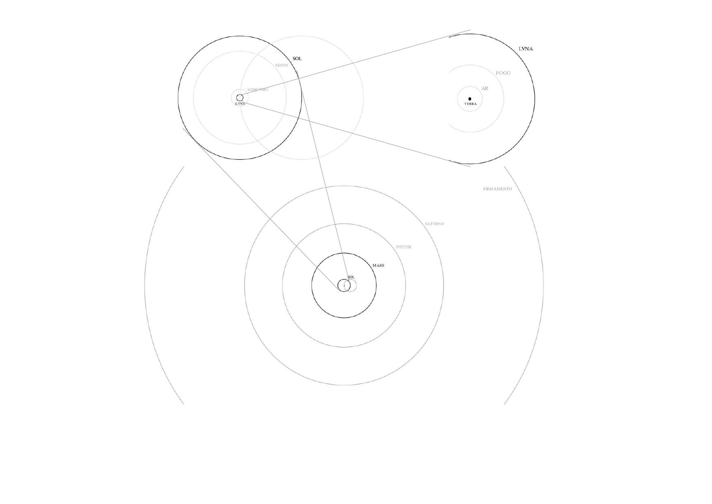

Bartholomeu Velho's Cosmographia illustration (1568, fol. 9v-10r, fol. 6r-7v, res.) depicting his geocentric model (c.f. Domosh et al., 2020, p. 28) with tables elaborated and recalculated as well as presented with corresponding images of his Solar System:
„ [...] the Bibliotheque Nationale succeeded in acquiring the manuscript in which the Portuguese Bartolomeu Velho summarised his cosmographic knowledge for the benefit of King Charles IX of France [...] This volume consists of 23 cosmographic tavoadas and figuras illustrated by representations of the terrestrial globe on different projections and allegorical figures of the Moon, Mercury, Venus, the Sun, Jupiter and Saturn [...] the work, which Velho compiled at the request of Francisco d'Albagno, remained in the latter's possession and was not delivered to the king owing to the author's death [...] Soon after, it passed to Giovanni Andreozzi [...] who in 1576 offered it to the Grand Duke Francis of Tuscany [...] it was discovered in the library of M. Ferreira das Neves [...] and studied in 1890 [...] The MS. reappeared in the library of Ch. Chadenat, whence it passed into the Bibliotheque Nationale on March 13, 1950 [...] “, (Foncin, 1960, p. 43-44).
See also Codazzi (1964), p. 78) and Cortesão (1965, 2009, respectively).
Table 1. Translation of the headline text.
portugues FIGURA DOS CORPOS CELESTES
english Picture of the celestial bodies.
Table 2. Display and translation of sphere parameters starting at the top right in a clockwise direction (c.f. Fig. 1).
Parameter Text
1) Arc length BL Legoas de hu grao : e cada hu globo celeste
Arc length per degree in legues.
2) Circumference U Legoas do mayor circulo de cada hu globo C'eleste.
Sphere circumference in legues.
3) Diameter D Legoas do diametro de cada hu globo celeste.
Sphere diameter in legues.
4) Width b Legoas da gro sura de cada hu globo cesleste.
Sphere width in legues.
5) Distance d Legoas ate o centro da terra ‐ de cada hu globo celeste.
Distance from the center of the earth or sphere radius in legues.
Figure 1.
Arc length BL (fol. 7v) per degree ∡° is calculated by
where circumference and diameter (fol. 7r). The corresponding circular constant used by Velho can be derived from given and as
or , respectively. Width (fol. 6v) at given is calculated by
where radius (fol. 6r) equals distance .
Table 3. Translation of the rotation descriptions.
Texto em portogues english
R. DA LVA Orbital period of the Moon
EN 27 DIAS E 8 ORAS in 27 days and 8 hours.
R. DE MERCVRIO Orbital period of Mercury
EN 70 DIAS E 7 ORAS in 70 days and 7 hours.
REVOLVCAO DE VENUS Orbital period of Venus
EN 273 DIAS E 23 ORAS in 273 days and 23 hours.
REVOLVCAC DO SOL Orbital period of the Sun
EN 365 DIAS E SEIS ORAS in 365 days and six hours.
REVOLVCAO DE MARS Orbital period of Mars
EN DOVS ANNOS in two years.
REVOLVCAO DO CEO D IVPITER Orbital period of the Jupiter sky
EN DOZE ANNOS in twelve years.
REVOLVCAO DO CEO D SATVRNO Orbital period of the Saturn sky
EN TRINTA ANNOS in thirty years.
REVOLVCAO DO CEO DAS ES TRELAS Orbital period of the starry sky
EN 36000 ANOS in 36000 years.
REVOLVCAO DO PRIMO Orbital period of the first
MOBILE EM 24 ORAS mobile in 24 hours.
CELVM EMPIREVM HABITACVLVM Heaven of the home of
DEI ET OMNIVM ELECTORUM God and all chosen ones.
Table 4. Radius r, distances d, res., given in Legoas converted into kilometers km, with Légua terrestre1 and Légua antiga (c.f. Costa, 1994).
km
L(t) L(a)
Terra 6 615,00 6 211,08
Ar 66 151,80 62 112,53
Fogo 180 076,05 169 080,50
Luna 344 092,65 323 082,14
Mercurio 895 537,50 840 855,44
Venus 4 974 750,00 4 670 988,75
Sol 6 627 225,00 6 222 562,63
Mars 34 430 550,00 32 328 199,75
Jupiter 65 894 812,50 61 871 235,31
Saturno 104 737 875,00 98 342 516,88
Firmamento 212 577 750,00 199 597 623,75
Velho's universe up to the firmament therefore has a size that roughly extends to the orbit of Mars, with semimajor axis (c.f. Williams, 2024).
For the corresponding distances or sizes of the spheres c.f. Fig. 2.
At this point it also becomes clear that, given the distances shown, it hardly makes any difference in the overall picture whether you place the Earth or the Sun in the center (see velho_tab01, velho_tab02, velho_tab03 and velho_tab04 tables).
Figure 2. 
In this context see Anaxagoras and his concepts of the primum mobile and nous (c.f. Ferchius, 1646), Pythagoras‘ doctrine of musica universalis (c.f. Davis et al., 1901) and Plato’s fifth etheric element, the quintessence (see e.g. Böckh, 1852):
„As the eyes, said I, seem formed for studying astronomy, so do the ears seem formed for harmonious motions: and these seem to be twin sciences to one another, as also the Pythagoreans say.", (Davis et al., 1901, p. 252).
For further readings see e.g. Campbell (1978, p. 105), Furtado (2022), Krtalić and McIntosh (2022) or Meirinhos (2022).
1:Land league in the colonial period of Brazil.Böckh, A. (1852). Untersuchungen Über Das Kosmische System Des Platon: Mit Bezug Auf Hrn. Gruppe’s Kosmische Systeme Der Griechen ; Sendschreiben an Alexander von Humboldt. Berlin: Verlag von Veit & Comp. https://doi.org/10.3931/e-rara-90691
Campbell, T. (1978). Chronicle. Imago Mundi 30: 103–8. http://www.jstor.org/stable/1150712
Codazzi, A. (1964). The Contribution of Roberto Almagià to the History of Cartography. Imago Mundi 18: 78–80. http://www.jstor.org/stable/1150381
Cortesão, J. (1965). História do Brasil nos Velhos Mapas. Vol. 2. História Do Brasil Nos Velhos Mapas. Brasilia: Ministor̄io das Relações Exteriores, Instituto Rio Branco. https://books.google.com/books?id=9TkNAAAAYAAJ
———. (2009). História Do Brasil Nos Velhos Mapas - Obras Completas IX. Portuguese. Vol. 1. Lisbon: INCM – Imprensa Nacional Casa da Moeda. https://www.amazon.com/Hist%C3%B3ria-Brasil-Velhos-Mapas-portugiesisch/dp/9722717952
Costa, I. (1994). Pesos e medidas no período colonial brasileiro: denominações e relações. Boletim de História Demográfica 1 (1). http://historia_demografica.tripod.com/bhds/bhd1.htm#pesos
Davis, H., Burges, G., & Rooker, G. Z. (1901). The Republic: The Statesman of Plato. London & New York: M. Walter Dunne. https://archive.org/details/republicstatesma00plat_0/
Domosh, M., Heffernan, M., & Withers, C.W.J. (2020). The SAGE Handbook of Historical Geography. Thousand Oaks, California: SAGE Publications. https://books.google.com/books?id=8n7vDwAAQBAJ
Ferchius, M. (1646). De Caelesti Svbstantia: Et Eius Ortu, Ac Motu in Sententia Anaxagorae Philosophi Celeberrimi. Venetiis: apud Haeredes Ioannis Salis. https://doi.org/10.3931/e-rara-73987
Foncin, M. (1960). Some Manuscript Maps Recently Acquired by the Département Des Cartes Et Plans of the Bibliothèque Nationale, Paris. Imago Mundi 15: 40–45. http://www.jstor.org/stable/1150275
Furtado, J. F. (2022). Cartography in the Administration of Portuguese America from the 16th to 18th Centuries. In The Oxford Encyclopedia of Brazilian History and Culture, edited by Palacios, G. Oxford: University Press. https://doi.org/10.1093/acrefore/9780199366439.013.773
Krtalić, Š., & McIntosh, G. C. (2022). Two Sixteenth-Century Nautical Charts of the South Atlantic Ocean: An Early Example of Cartography Used at Sea. Journal of Navigation 75 (6): 1280–97. https://doi.org/10.1017/S0373463322000662
Meirinhos, J. F. (2022). Celestial Bodies and Dimension of the Universe in Bartolomeu Velho’s Cosmographia. In From Wisdom to Data: Philosophical Atlas on Visual Representations of Knowledge, edited by Higuera, J. G., Romele, A., Rodighiero, D., & Pedro, C. Coleção Transversal. Porto: University of Porto Press. https://books.google.com/books?id=EAEezwEACAAJ
Velho, B. (1568). Principio da verdadeira cosmographia ... per Bartholomeu Velho portugues/neste anno de 1568. Paris: Bibliothèque nationale de France. http://catalogue.bnf.fr/ark:/12148/cb416166390
Williams, D. R. (2024). Mars Fact Sheet. NASA Goddard Space Flight Center. https://nssdc.gsfc.nasa.gov/planetary/factsheet/marsfact.html
Velho-s-Cosmographia-tables
Dietmar Gerald Schrausser03.07.2025